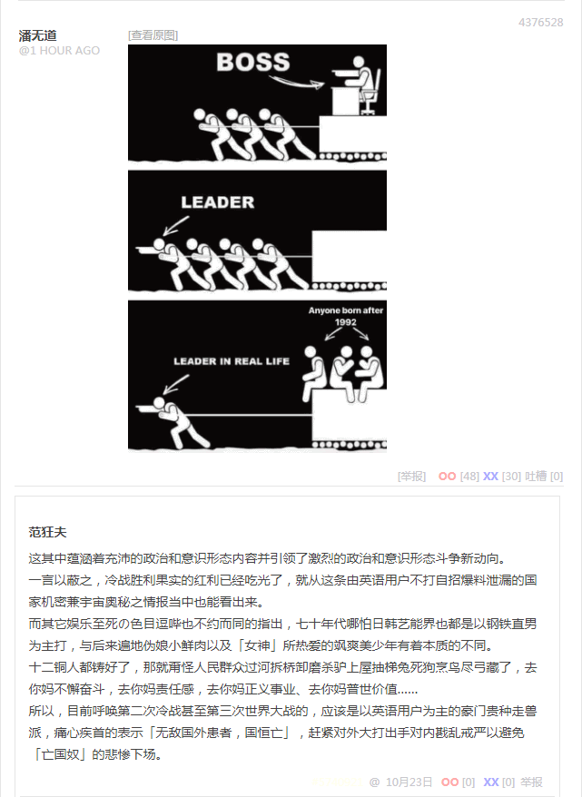
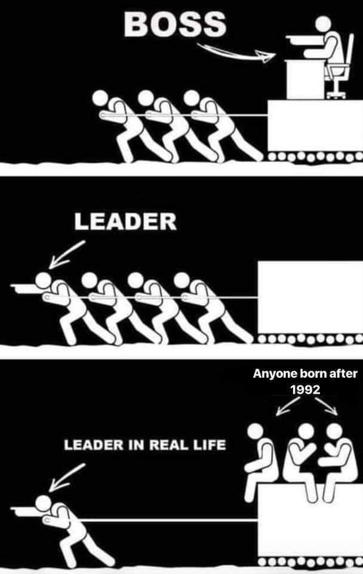

无聊图 4376528

这其中蕴涵着充沛的政治和意识形态内容并引领了激烈的政治和意识形态斗争新动向。
一言以蔽之，冷战胜利果实的红利已经吃光了，就从这条由英语用户不打自招爆料泄漏的国家机密兼宇宙奥秘之情报当中也能看出来。
而其它娱乐至死の色目逗哔也不约而同的指出，七十年代哪怕日韩艺能界也都是以钢铁直男为主打，与后来遍地伪娘小鲜肉以及「女神」所热爱的飒爽美少年有着本质的不同。
十二铜人都铸好了，那就甭怪人民群众过河拆桥卸磨杀驴上屋抽梯兔死狗烹鸟尽弓藏了，去你妈不懈奋斗，去你妈责任感，去你妈正义事业、去你妈普世价值……
所以，目前呼唤第二次冷战甚至第三次世界大战的，应该是以英语用户为主的豪门贵种走兽派，痛心疾首的表示「无敌国外患者，国恒亡」，赶紧对外大打出手对内戡乱戒严以避免「亡国奴」的悲惨下场。
补充
用龟头思考也能猜到，作为第二次热战的结果之两德已经统一了，但两棒还没有。如果没有第三次热战直接开始第二次冷战，肯定在棒半岛，以三八线为界，上演全套两德剧本，还得找个柏林那种大手情报机构狂欢的舞台。
也就是说，不惮以最大的恶意揣测，两棒的和平进程很快就会急转直下，然后各自扩军备战，兲朝又会重建「志愿军」以解决目前正在令「退役军人事务部」焦头烂额的现实问题。
而我中华兲朝上国の国际一流和谐宜居之都，充沛着色目混混鸡鸣狗盗之徒，被各种大手情报机构安插的间谍特务卧底渗透得如同筛子一样，动辄24×7监视人民群众并在电信大亨的协助下将大数据通过云上夜郎国等地中转传送到CIA/КГБ/MI5……那里去。
所有舞台都已经准备好了，就等着看看名角大腕表现精湛演技喽。
顺便，预测北京市「西城区」和「东城区」将分别与「柏林自由区」「柏林洪堡区」签署友好城市协议，两份协议法律效力相同，但互相不承认另外一份，以开创外交史之先例。
然后「北京墙」在一夜之间修好，党国高音喇叭吹嘘此乃我中华兲朝上国大国工程の典范，境外媒体纷纷惊呼兲朝先进の生产力不可战胜。再然后北京大兴国际机场，与原首都机场，则会重演「柏林空运事件」。